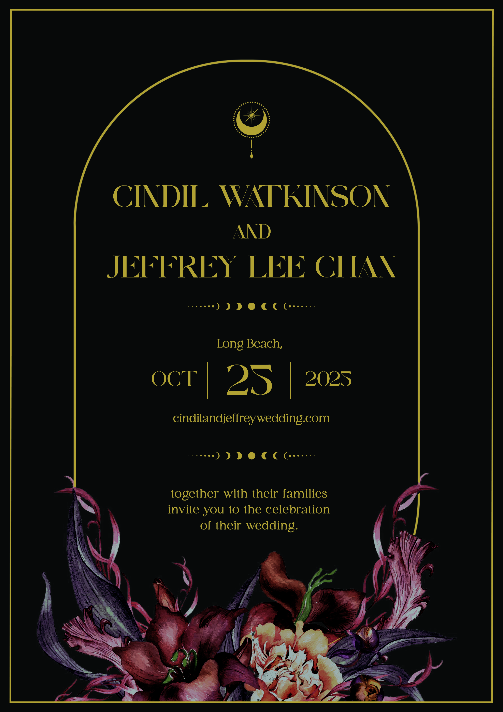
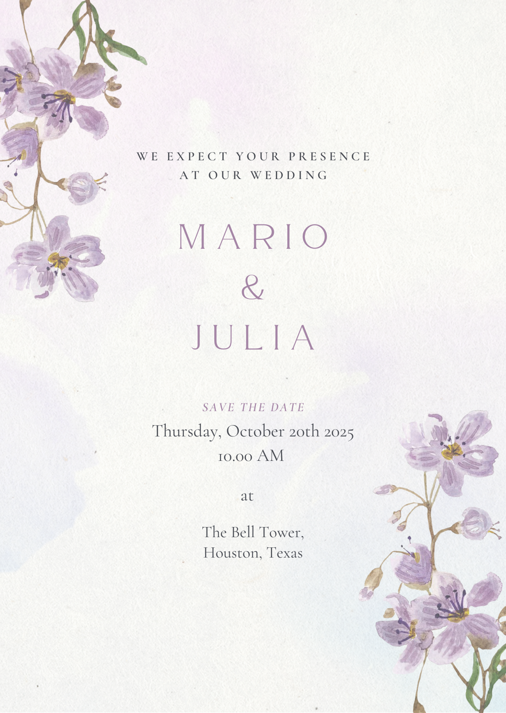
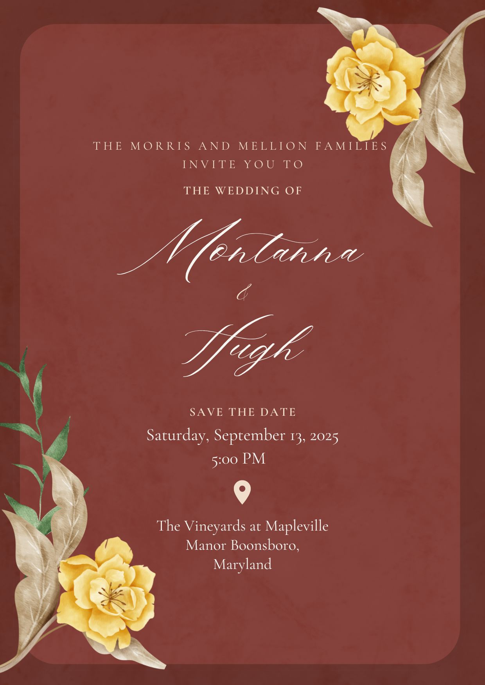
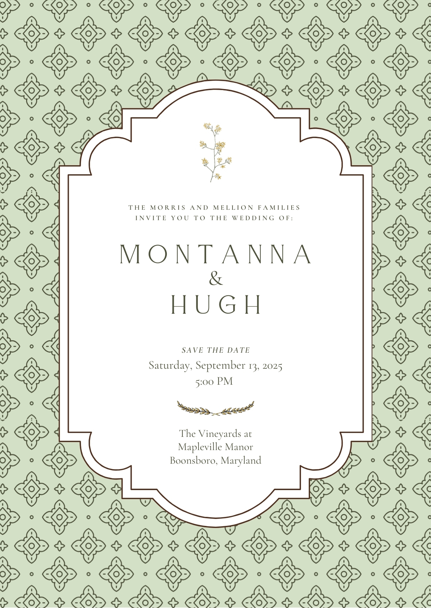

Couple names
Wedding Suite Design
DESIGN THE PERFECT CELEBRATION
Invite films, stationery and websites – designed as one story, from the first save-the-date to the last thank-you.
01
Invites
Motion invites that open the story – swipe through, press play.
Couple names
Couple names
02
Stationery
Menus, programmes, place cards and signage – one set, every detail.







03
Websites
Wedding sites that guests actually enjoy – hover a card to visit.